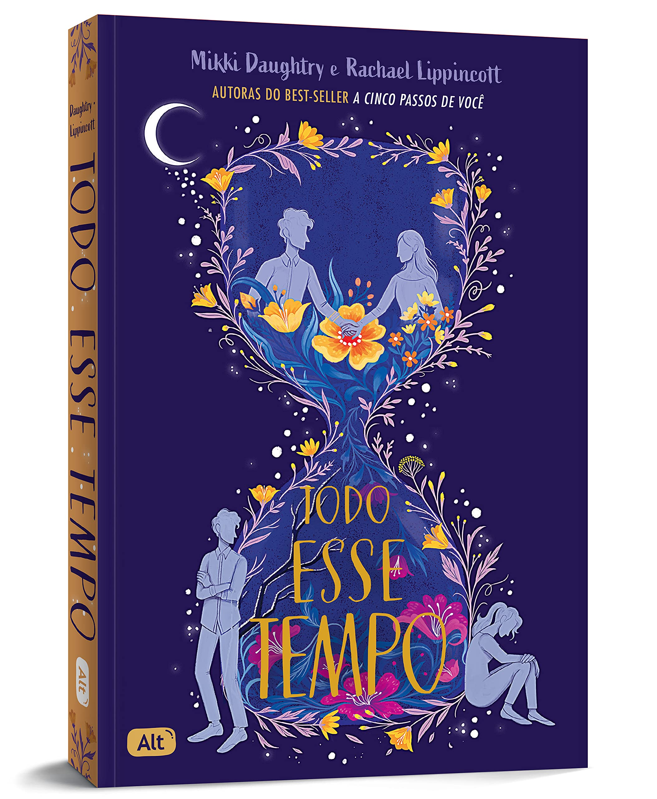

Aqui vocês poderão obter dicas de gêneros literários

Todo esse tempo
Marley também sofreu uma perda, uma perda que ela acredita ter sido culpa dela. Quando seus caminhos se cruzam, Kyle vê nela um espelho de tudo o que está sentindo. Conforme Kyle e Marley curam suas feridas, seus sentimentos um pelo outro ficam mais fortes. De uma tragédia, nasce um amor que parece predestinado.
Aristóteles e Dante descobrem o segredo do universo

Um garoto como Dante, com um jeito tão único de ver o mundo, deveria ser a última pessoa capaz de romper as barreiras que Ari construiu em volta de si. Mas quando os dois se conhecem, logo surge uma forte ligação. Eles compartilham livros, pensamentos, sonhos, risadas - e começam a redefinir seus próprios mundos.
Um garoto como Dante, com um jeito tão único de ver o mundo, deveria ser a última pessoa capaz de romper as barreiras que Ari construiu em volta de si. Mas quando os dois se conhecem, logo surge uma forte ligação. Eles compartilham livros, pensamentos, sonhos, risadas - e começam a redefinir seus próprios mundos.
Um garoto como Dante, com um jeito tão único de ver o mundo, deveria ser a última pessoa capaz de romper as barreiras que Ari construiu em volta de si. Mas quando os dois se conhecem, logo surge uma forte ligação. Eles compartilham livros, pensamentos, sonhos, risadas - e começam a redefinir seus próprios mundos.
Livros de ficção:
Rainha Vermelha
Mare e sua família são vermelhos: plebeus, humildes, destinados a servir uma elite prateada cujos poderes sobrenaturais os tornam quase deuses. Mare rouba o que pode para ajudar sua família a sobreviver e não tem esperanças de escapar do vilarejo miserável onde mora.
Estilhaça-me
Com apenas um toque, Juliette Ferrars é capaz de fazer um homem adulto se ajoelhar de dor e implorar por misericórdia. Um único toque de Juliette pode matar. Ninguém sabe por que a garota tem um poder tão impressionante, o qual ela acredita ser uma maldição, um fardo que uma pessoa sozinha seria incapaz de carregar.

Princípe cruel

Jude tinha 7 anos quando seus pais foram assassinados e foi forçada a viver no Reino das Fadas. Dez anos depois, tudo o que ela quer é ser como eles – lindos e imortais – e realmente pertencer ao Reino das Fadas, apesar de sua mortalidade. Mas muitos do povo das Fadas desprezam os humanos.
De sangue e sinzas
Abandonado pelos deuses e temido pelos mortais, um reino caído está se erguendo mais uma vez, determinado a retomar o que é seu por meio da violência e da vingança. Conforme a sombra dos amaldiçoados se aproxima, os limites entre o proibido e o tolerável se tornam cada vez mais turvos.
A garota do lago

Filha de um poderoso advogado, Becca estava no auge de sua vida. Atraída Instintivamente pela notícia, a repórter Kelsey Castle vai até a cidade para investigar o caso. ... E Logo Se Estabelece Uma Conexão Íntima Quando Um Vivo Caminha Nas Mesmas Pegadas Dos Mortos...
Um de nós está mentindo

Cinco alunos entram em detenção na escola e apenas quatro saem com vida. Todos são suspeitos e cada um tem algo a esconder. Numa tarde de segunda-feira, cinco estudantes do colégio Bayview entram na sala de detenção: Bronwyn, a gênia, comprometida a estudar em Yale, nunca quebra as regras.
OBRIGADA PELA PREFERÊNCIA ATÉ A PRÓXIMA!!!